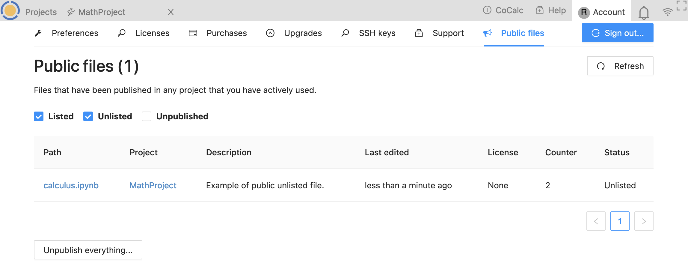

Public files
The Public files tab shows a list of all files that have been published under the present account. After the words “Public files”, the number of files displayed is shown in parentheses.
There are checkboxes below the heading that you can use to include or exclude files that are Listed, Unlisted, or Unpublished. See Sharing Files and Folders for an explanation of Listed vs. Unlisted. A file will appear in the Unpublished filter if it has been published and then unpublished after that.
For each file listed, the following information is displayed:
Path. Path for the file relative to the home directory in the project that contains it. Click the path to view the file in your account.
Project. Title of the project containing the file. Click the project title to open the project in your account.
Description. Description, if any, for the file that was entered when the file was published.
Last edited. Time and date when the file was last edited.
License. Software license, if any, that was chosen when the file was published.
Counter. Number of times the published file has been accessed.
Status. Current publication status for the file. One of Listed, Unlisted, or Unpublished

{kind=link}